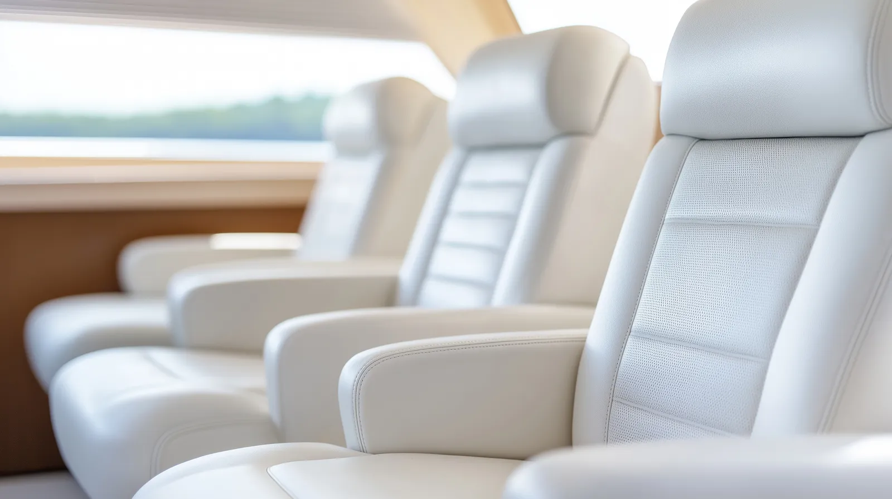
Tarpon Springs, FL
Tampa Bay Canvas & Upholstery
Exceptional marine canvas and upholstery, ensuring lasting beauty and protection at competitive prices.
- Sunbrella canvas
- 1,000-hour warranty
- American-made Naugahyde vinyl
About us
Built for Florida's harsh sun and rain
Tampa Bay Canvas and Upholstery is dedicated to delivering exceptional marine canvas and upholstery, ensuring lasting beauty and protection at competitive prices. We exclusively use Sunbrella canvas, backed by a 1,000-hour warranty, to withstand Florida's harsh sun and rain, guaranteeing years of reliable performance. For our upholstery, we choose Naugahyde, a premium American-made vinyl known for its superior UV protection and mildew resistance, preserving your boat's interior for years. Our commitment is to your satisfaction, not just upon delivery, but throughout the life of your investment.
Our Services
- Marine Upholstery and Canvas Work
- JetSkis
- Restaurant and Hotel Seating
- Awnings and Shade Structures
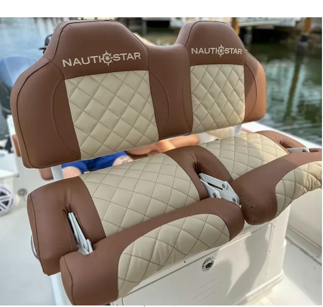
Get a quote
What do you need?
Pick one and we will start your quote request for you.
Marine
Marine Upholstery and Canvas Work
Expert marine upholstery and canvas work combines durable, weather-resistant materials with precise craftsmanship to enhance both the comfort and protective functionality of your vessel, ensuring longevity and aesthetic appeal in harsh marine environments.
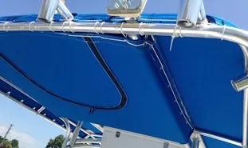
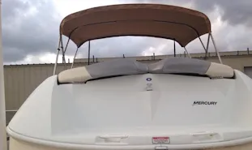
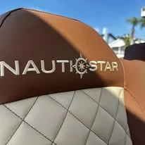
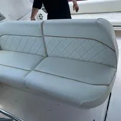
Restaurant & Hotel
Restaurant and Hotel Seating
Restaurant and hotel seating is paramount to guest experience, and when wear and tear diminish that experience, Tampa Bay Canvas and Upholstery steps in to restore both comfort and style. From worn dining chairs to faded lobby sofas, their expert reupholstering services breathe new life into existing furniture, ensuring that establishments maintain a welcoming and aesthetically pleasing environment. By utilizing durable, high-quality materials and meticulous craftsmanship, they help restaurants and hotels in Tampa Bay preserve their seating investments, allowing them to focus on providing exceptional service without compromising on the visual appeal or comfort of their spaces.
Contact us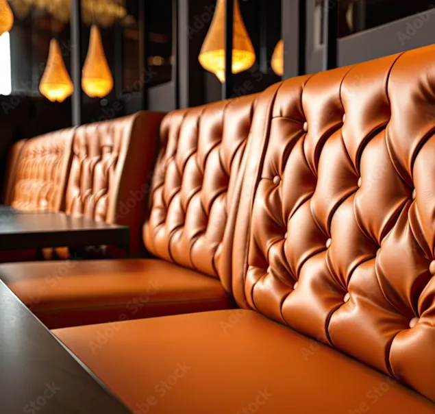
Awnings
Awnings and Shade Structures
Awnings and shade structures are vital for creating comfortable outdoor spaces in Tampa Bay restaurants and hotels, offering respite from intense sun and rain. Tampa Bay Canvas and Upholstery specializes in crafting custom solutions that blend functionality with aesthetic appeal. Their expertise ensures patios, dining areas, and pool decks remain inviting.
By utilizing durable, weather-resistant materials and precise installation, Tampa Bay Canvas and Upholstery helps businesses maximize outdoor space. These custom awnings and shade structures not only protect guests but also enhance the overall ambiance, contributing to a memorable and enjoyable experience.
Contact us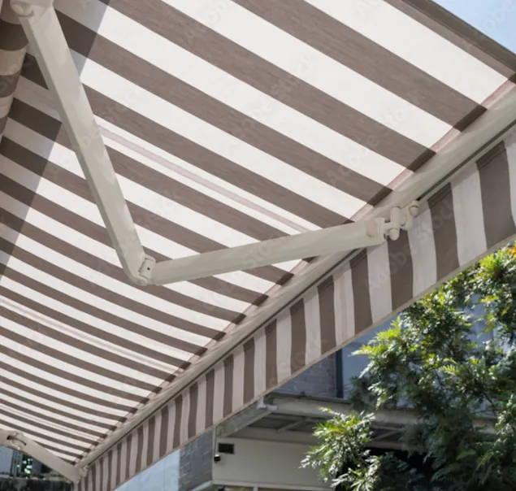
Gallery
Product Gallery
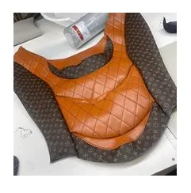
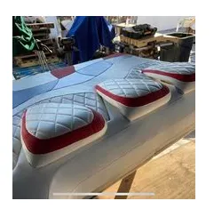
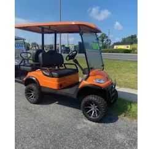
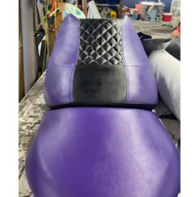
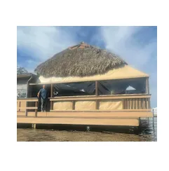
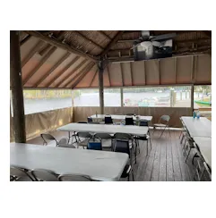
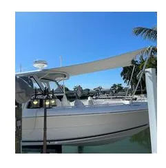
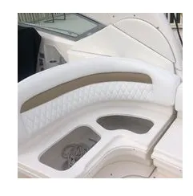
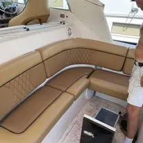
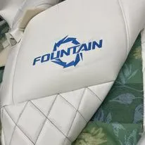
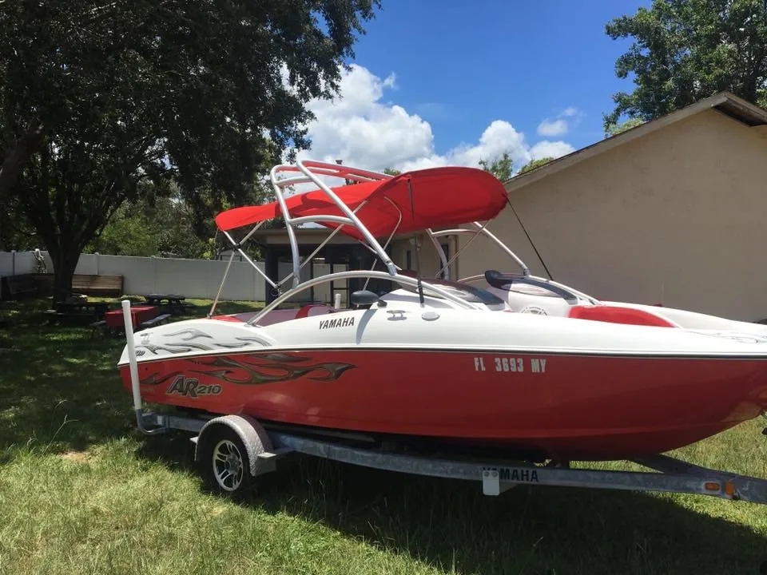
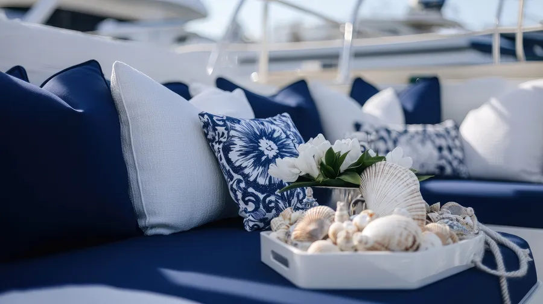
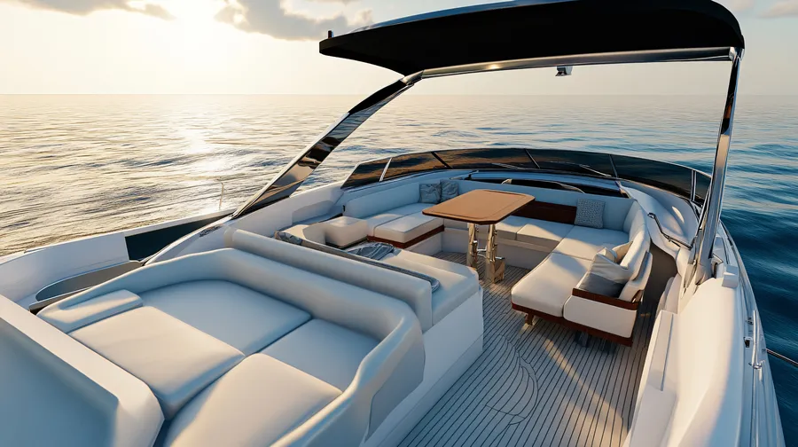
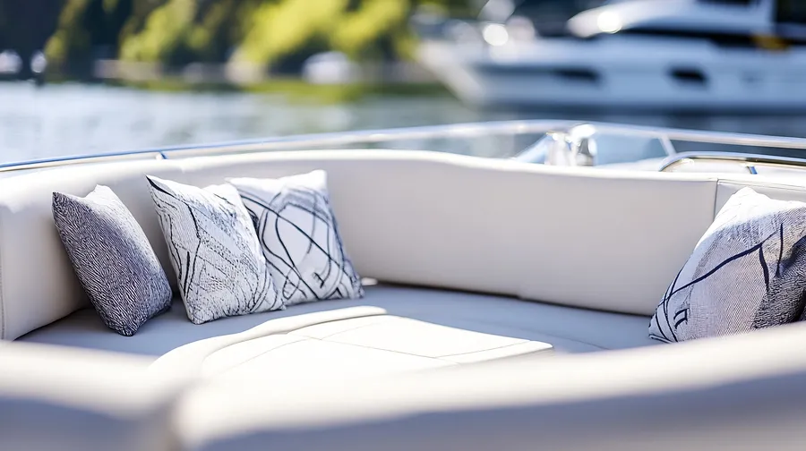
Reviews
Testimonials
“Tampa Bay Upholstery exceeded my expectations! As a first-time boat owner, I was nervous, but they made the whole process easy. The quality is outstanding, and my boat looks brand new. Highly recommend Tampa Bay Upholstery.”Barnaby Finch
“I needed a custom canvas cover for my sailboat. Tampa Bay Upholstery delivered perfectly. The fit is precise, and the material is top-notch. I'm very happy with their service and the final product. Tampa Bay Upholstery is the way to go!”Coralie Meadows
Contact
Contact Details
Our LocationPort Tarpon Marina
527 Anclote Rd.
Tarpon Springs, FL 34689
Port Tarpon Marina | Tarpon Springs
Phone855-545-SEAT (7328)
Our Emailsales@tampabayupholstery.com